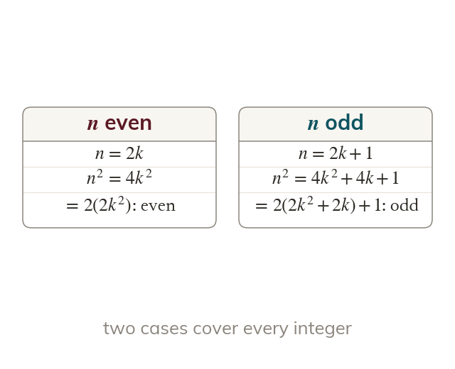
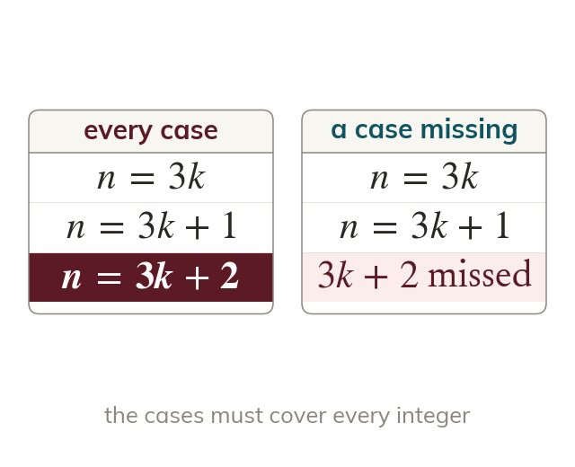
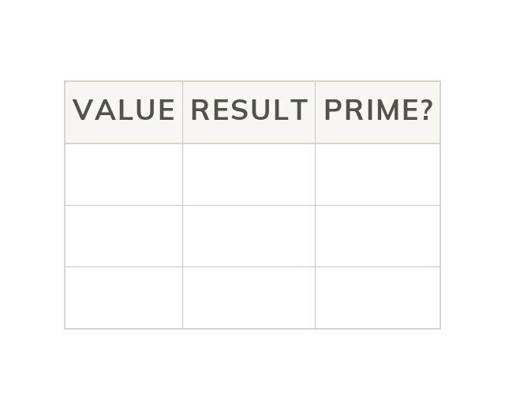
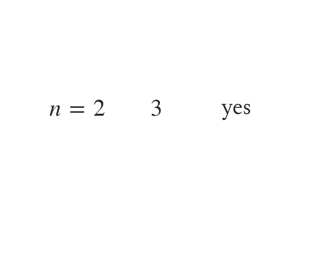
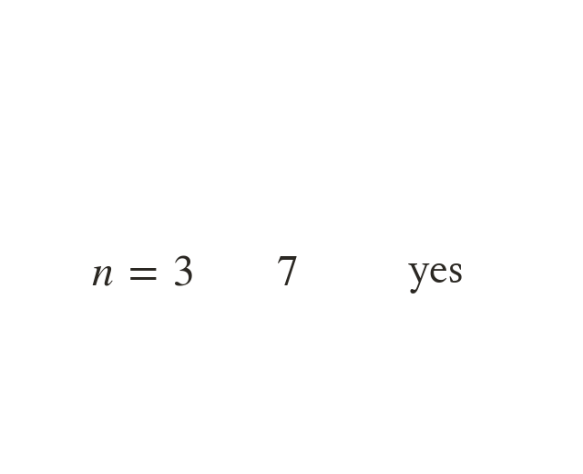
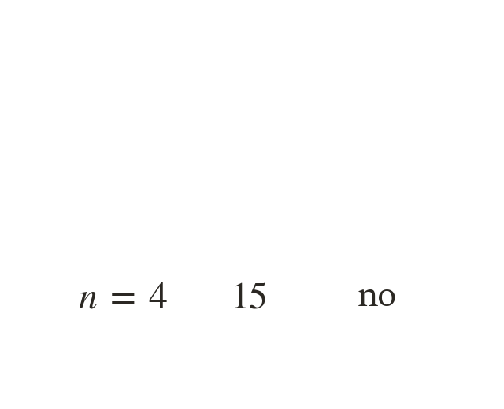
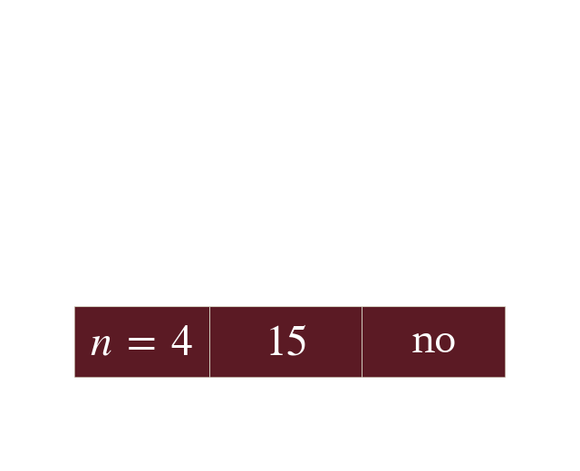
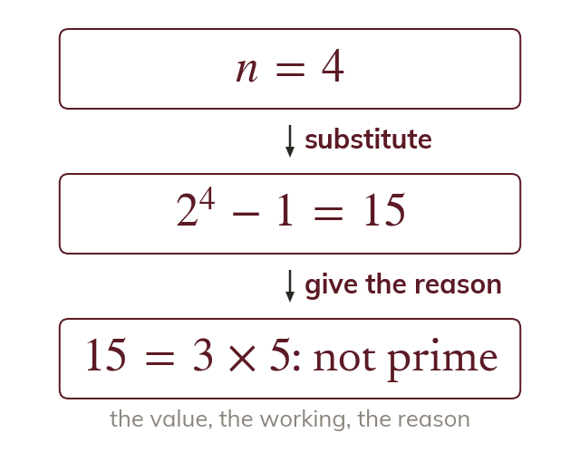

Split into cases
Proof by exhaustion splits every possibility into a finite number of cases. Each case is proved, so together they cover everything.
Some statements are proved by checking every case, and a single counter-example is enough to show that a statement is false. These finish the chapter's methods of proof, which later chapters use whenever a question says prove or show that.
Work down the page at your own pace. Write every answer in your book first, then click to check it.
Read each card, then follow the worked examples one step at a time.

Proof by exhaustion splits every possibility into a finite number of cases. Each case is proved, so together they cover everything.

Name the cases before proving them, and check that they cover every value. A missing case leaves the proof unfinished.
Pick an answer. If it's wrong, the feedback tells you which mistake it was.
Write the blanks in your book first, then tap each one to check.
Read each card, then follow the worked examples one step at a time.





A statement about every is false if a single value breaks it. The claim that is prime for every fails at

A counter-example must meet the statement's conditions, and it needs its working and a reason. Work out the value, then say why it breaks the statement.
Pick an answer. If it's wrong, the feedback tells you which mistake it was.
Write the blanks in your book first, then tap each one to check.
Finished? Next lesson: 9.5 Graphs of Sine, Cosine and Tangent.
For each skill, tap the one that is true for you today. Your Revise pages start with anything you mark Not yet.
Your ratings are saved on this device only.
Log in, then search for a code to practise that skill.